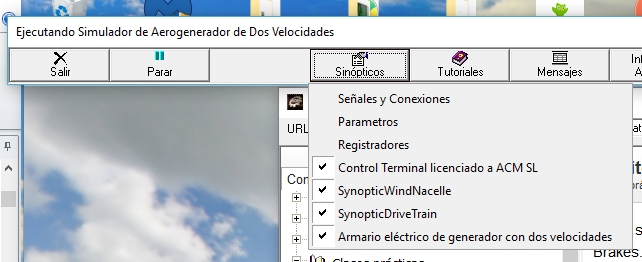

Os sinópticos específicos desta configuração podem ser exibidos e ocultos usando as caixas associadas com sua lista, que aparece clicando no botão de menu "Synópticos" no controle de execução sinóptico. Veja a figura a seguir.

Você também pode controlar sua presença na tela usando os ícones específicos que aparecem no "Barra de Ferramentas." Veja a figura a seguir.
Colocando o cursor do mouse sobre os ícones "ACM" exibirá um texto com o nome do sinótico associado.
Clicando com o botão esquerdo do mouse irá mostrar ou esconder o sinóptico correspondente.